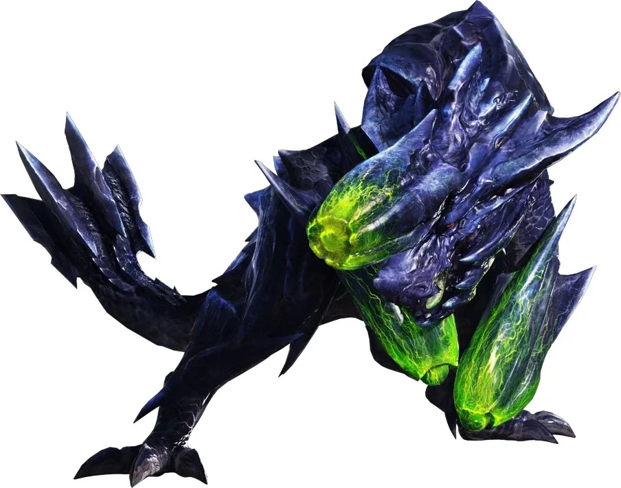
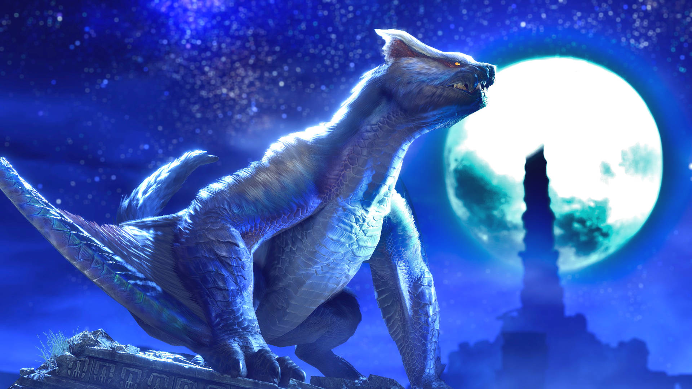
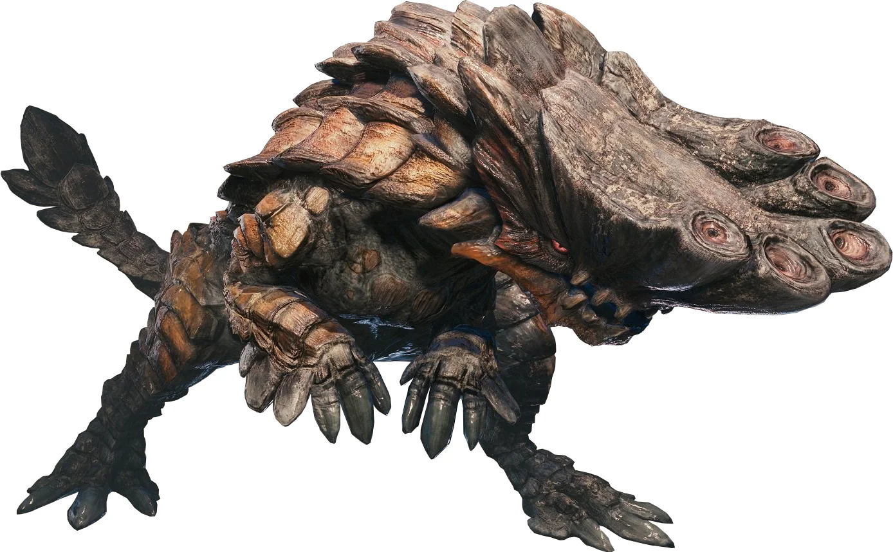
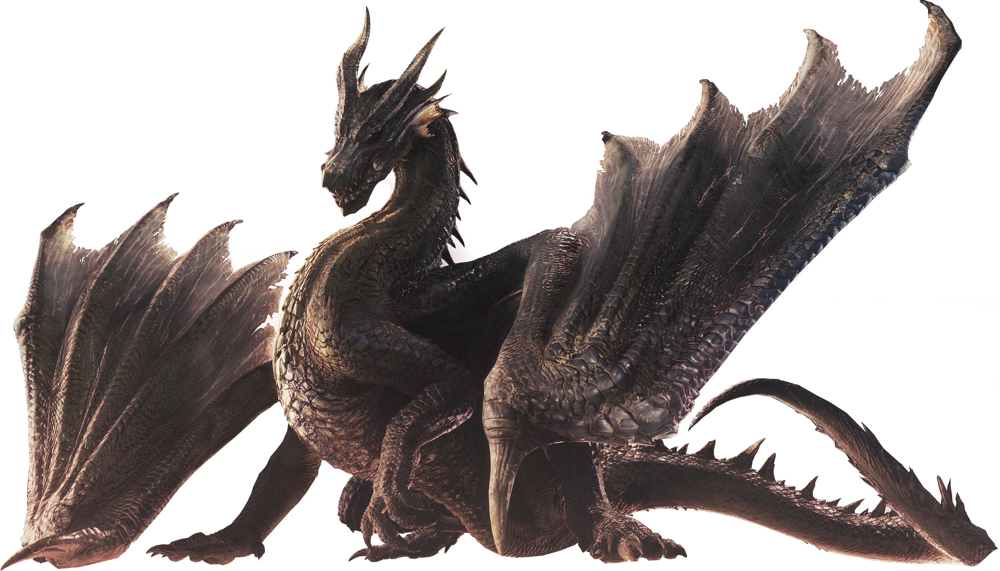
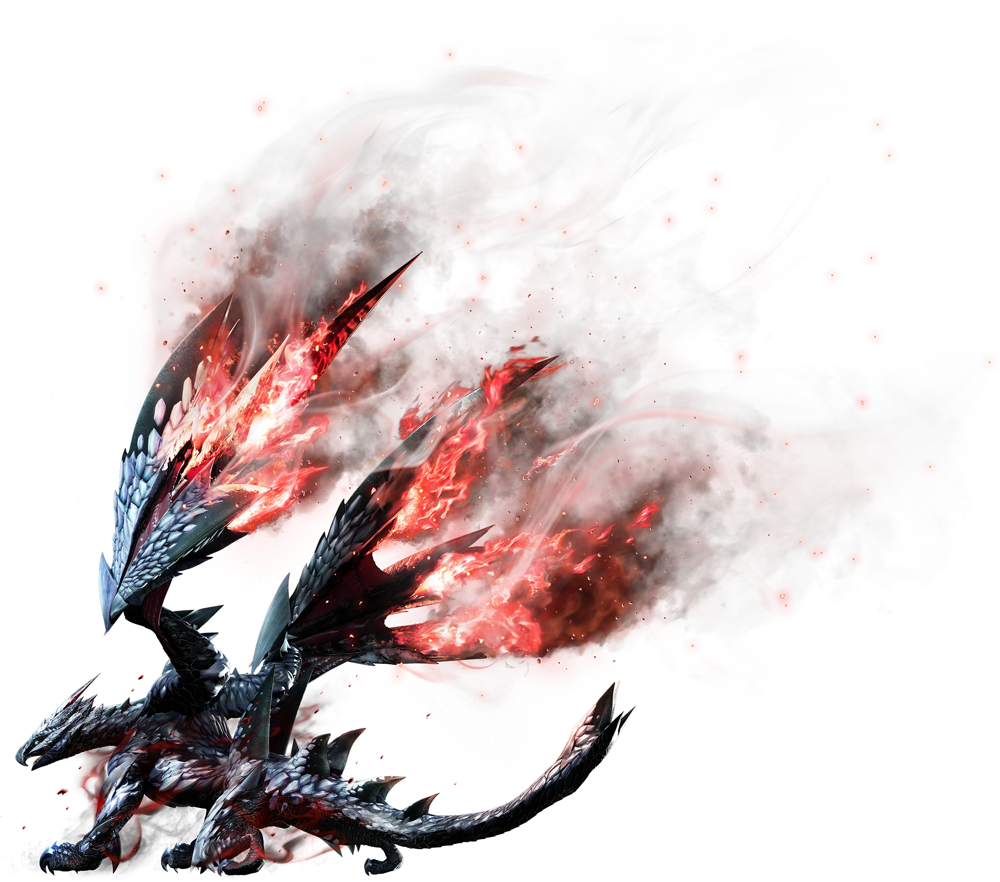

The Wyverian twins Hinoa and Minoto inform the player-character in Kamura Village that they have been promoted to a Hunter by the Guild. The new Hunter is escorted to the village elder Fugen, but on the way, he notices an unidentified flying monster out in the distance. Fugen congratulates the Hunter on their victory but informs them of impending symptoms of "The Rampage," a mystery catastrophe that happened fifty years ago when a sizable horde of monsters invaded the hamlet in a fit of wrath. Fugen gives the Hunter numerous assignments to do in order to protect and provide the town with supplies while honing their hunting skills in order to get ready for a potential repeat of the Rampage. Fugen urges the Hunter to proceed to the Stronghold, a battleground that protects the gates of Kamura, as more indications of the Rampage appear. The Hunter, Yomogi, the village cook, and Iori, the "Buddy Handler," who had previously repelled the attack, are abruptly attacked by a tiger-like, mace-tailed fanged wyvern, forcing them to flee. The "Magnamalo" monster, which arrives alongside the Rampage and eats other horde-type creatures, is described to the trio by Fugen. Magnamalo is killed by the Hunter on Fugen's orders. Fugen and Hinoa congratulate the Hunter on their triumph after arriving back in the village. The Hunter is then given Fugen's Long Sword, which has been passed down through the Kamura family for many years.
While Hinoa is wondering how long the Rampage will endure after resisting another attack, the same flying serpentine dragon-like monster that the Hunter had earlier seen suddenly appears. Hinoa says as her eyes suddenly turn blue: "My queen, where are you? My queen, where are you? "before she came to herself. The creature is eventually revealed to be Ibushi, an Elder Dragon also known as the Wind Serpent. The group starts to wonder who Ibushi's "queen" is when Ibushi is driven away. Ibushi's "queen" is revealed to be the Thunder Serpent, Narwa, who serves as Ibushi's female counterpart and mate by Master Utsushi, the village's watchman. The origins of Ibushi and Narwa are discovered through additional guild investigation. Ibushi and Narwa both emerge to mate once every fifty years, and in order to do so, Ibushi must rove the countryside in search of Narwa. Ibushi is also believed to release dragon energy into the ground, causing terrible storms. The landscape is being destroyed by this turbulence, which is powerful enough to uproot trees. Monsters in the area are horrified by this and rush into Kamura Village. In the interim, Narwa appears to wait until Ibushi can find her in a place she favors. However, she tends to agitate other monsters with her presence and electromagnetic powers, which frequently causes a rampage event to strike Kamura Village during the Serpent's mating ritual. when the serpents were mating. This information demonstrates that the Serpent Elder Dragons' activities are what led to the Rampage. They summon the Hunter to kill Narwa because she had killed most of the village's hunters. Narwa is supposedly murdered when she falls to her death following a bloody struggle with the Thunder Serpent. However, no sign of Narwa's death is discovered, leading Fugen to conclude that Narwa is still alive. The Hunter overhears Hinoa and Minoto (both possessed by Ibushi and Narwa) discussing how their progeny will roam the entire planet during the night.
The Hunter learns that Narwa and Ibushi have returned and are now together after battling off several elder dragons. Fugen asks the Hunter to face the two serpents and put an end to the Rampage once and for all. Ibushi, whose life force is eaten by Narwa, who then becomes Narwa the Allmother and considerably increases her power, fights the Hunter. The Hunter fights Narwa once more with the assistance of Magnamalo, who unexpectedly shows up and assaults the Thunder Serpent. The Hunter kills Narwa after a bloody battle and goes back to the settlement. When the community celebrates with a lavish feast and Hinoa declares that the village has at last found peace, Fugen declares the Hunter to be Kamura's Savior.

Favorite Quote:"Savior of Kamura"
| Brachydios |  |
| Lucent Nargacuga |  |
| Barroth |  |
|  | |
| Valstrax |  |